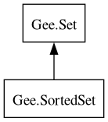

SortedSet
Object Hierarchy:

Description:
[
GenericAccessors ]
public interface SortedSet<
G> :
Set<
G>
A sorted set, which you can navigate over and get sub-sets of.
All known implementing classes:
All known sub-interfaces:
Content:
Properties:
Static methods:
Methods:
- public abstract G ceil (G element)
Returns the element which is higher or equal then the specified
element.
- public abstract G first ()
Returns the first element of the sorted set. Set must not be empty.
- public abstract G floor (G element)
Returns the element which is lower or equal then the specified
element.
- public abstract SortedSet<G> head_set (G before)
Returns the sub-set of this sorted set containing elements strictly
lower than the specified element.
- public abstract G higher (G element)
Returns the element which is strictly higher than the specified
element.
- public abstract Iterator<G>? iterator_at (G element)
Returns a
BidirIterator initially pointed at the specified element.
- public abstract G last ()
Returns the last element of the sorted set. Set must not be empty.
- public abstract G lower (G element)
Returns the element which is strictly lower than the specified
element.
- public abstract SortedSet<G> sub_set (G from, G to)
Returns the right-open sub-set of this sorted set, thus containing
elements equal or higher than the specified from element, and stricly lower than the specified to element.
- public abstract SortedSet<G> tail_set (G after)
Returns the sub-set of this sorted set containing elements equal or
higher than the specified element.
Inherited Members:
All known members inherited from interface Gee.Set